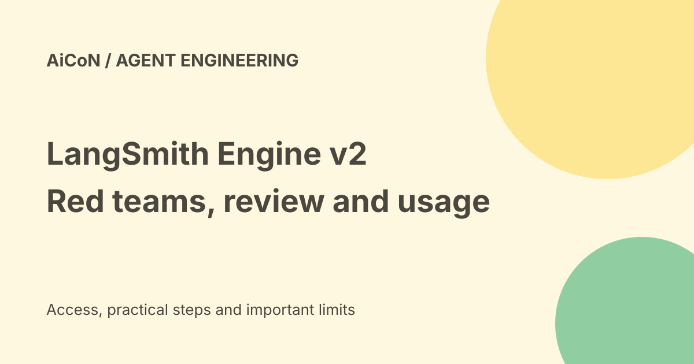

LangSmith Engine v2: red teaming, tested fixes and real access limits
LangSmith Engine v2 helps engineering teams find problems in their AI agents and propose fixes. The September launch describes proactive red teaming and broader issue detection. Automated validation of fixes is a separate private-beta feature for existing LangSmith Deployment users. It is not a guarantee that every free account can safely auto-fix a production agent.

What does Engine do?
LangChain describes Engine as an agent inside LangSmith that examines application activity, finds issues and suggests prompt or code changes.
It is aimed at teams building agents, not a general replacement for a consumer chatbot. Useful operation depends on the data, repository and runtime your team makes available.
Red teaming explained
Red teaming means deliberately probing an agent for failures before real users encounter them. Engine uses production traces and repositories to form and test possible failure cases.
A successful test suite only covers the tested cases. It does not prove an agent is immune to unsafe requests, private-data leaks or unexpected tool actions.
More issue types
The release lists errors, unmet requests, repeated tool calls, long action paths and trends in error rate, latency and cost.
Latency means delay. A trajectory is the sequence of messages and actions taken during a task. Long sequences can reveal wasted work, but a short answer is not automatically a correct one.
Automated fix testing is private beta
The detailed Engine v2 article says validation of proposed fixes is in private beta for existing LangSmith Deployment users.
It reproduces the offending inputs, tries candidate changes and evaluates results before presenting a fix for human review. Do not describe that as generally available autonomous production deployment.
Human review still matters
The release describes opening a pull request after reviewing a proposed fix. A pull request is a change submitted for review, not proof that the change has already gone live.
Inspect security, permissions and wider behaviour before merging. A fix for one failure can create another. Keep rollback and independent tests.
Plans and costs
The current pricing page lists Developer at zero dollars per seat per month with one seat and up to five thousand base traces monthly, then pay-as-you-go usage. Plus is thirty-nine dollars per seat monthly, then pay as you go, with up to ten thousand base traces monthly.
The Engine launch says SaaS access is for Plus and Enterprise plans. A free Developer seat does not establish free Engine access. Seat fees are not the entire usage bill.
Usage is separate from seats
The pricing page uses LangChain Standard Units, or LSUs, and lists one dollar per LSU. Its calculator is an estimate; actual consumption varies with work performed.
Training, model serving and external providers can add separate costs. No fixed INR checkout total or production budget was verified. Review the actual estimate and billing limits before enabling work.
Self-hosted limits
The launch article says self-hosted Engine v2 support and bring-your-own-key support were coming in a later release.
That is a forward-looking launch statement, not proof the feature is now enabled on every self-hosted installation. Confirm your version and account documentation before relying on it.
Managed Deep Agents
The wider release describes user-level memory, agent and user-owned credentials, Slack file support, HTTP channels and built-in web search.
Separate a user's private memory from shared agent memory and test the access rules. An authentication feature is not proof that your application has configured it correctly.
Trajectories and fine-tuning
LangSmith's trajectory view arranges a task into conversational steps. The smithtune workflow uses selected trajectories to prepare training data, run supervised fine-tuning with Fireworks or Baseten and evaluate the result.
Supervised fine-tuning trains on examples of desired behaviour. Poor or unsafe examples can teach poor behaviour. Keep evaluation data outside the training set and compare on realistic tasks.
Sensitive-data checks
Traces can contain user messages, files, credentials and outputs. Review collection, retention, exports and third-party training destinations before sharing them.
Remove secrets and confirm the rights to use the data. A debugging record is not automatically approved as training material.
A careful evaluation workflow
- Confirm the plan and accepted beta access.
- Choose a limited, non-sensitive project.
- Review repository and trace permissions.
- Set cost limits and track usage.
- Reproduce failures independently.
- Inspect proposed changes.
- Run a separate evaluation set and permission tests.
- Review a pull request before merging.
- Monitor and keep rollback available.
No repository, production agent, training job or paid account was changed for this guide.
What changed since the original post?
We add private-beta and plan boundaries, distinguish reviewed fixes from deployment and explain usage costs. The release posts give different company-reported trace totals, so those figures should not be treated as independent evidence of quality.
Frequently asked questions
Does the free plan include everything?
No. Engine and usage have separate limits.
Are validated fixes automatically safe to deploy?
No. Human review and broader tests still matter.
Was fine-tuning run?
No.
Sources: Release overview · Engine v2 access and private-beta limits · Fine-tuning workflow · Current plans and usage pricing. Checked 7 October 2026.